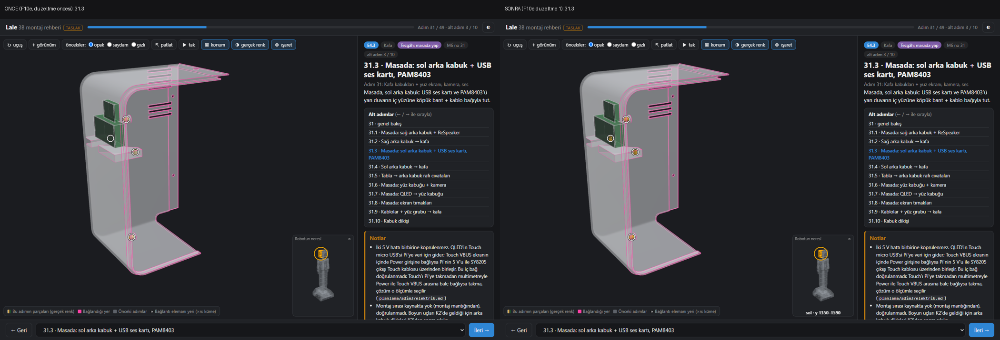
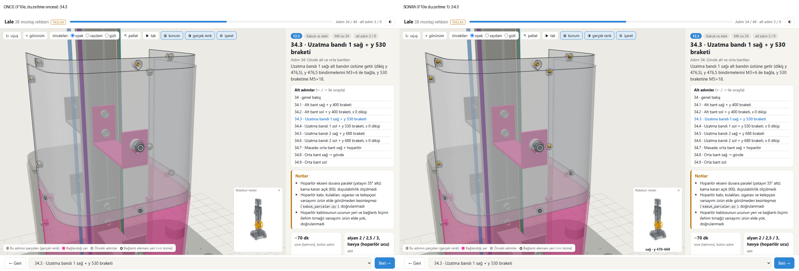
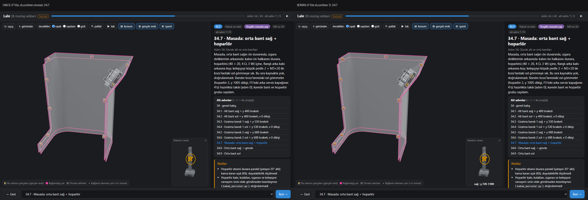
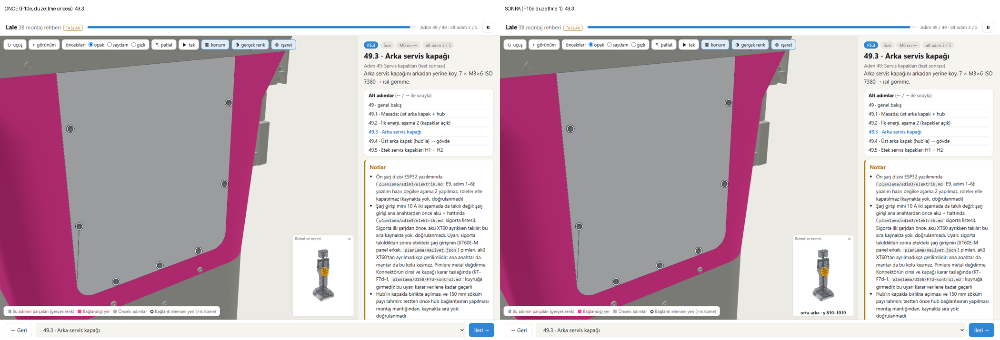
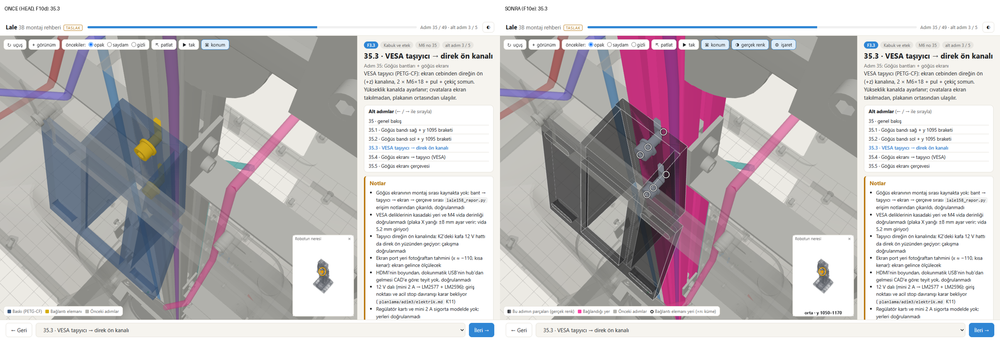

Lale F10e: gerçek parça rengi, bağlandığı yer vurgusu, cıvata yeri işaretleri, zor kalan kareler (P10.4b)
Kayıt ajanı · 12.11.2026 · dal lale-duzeltme (HEAD 90c270a, paket çalışma ağacında) · kaynaklar: F10e-brief.md, F10e-gunluk.md (uygulama ajanı A; §12 düzeltme turu 1, ajan D1), F10e-kontrol.md (ilk bağımsız kontrol B: DÜZELTME GEREKLİ), F10e-duzeltme-1-brief.md, F10e-kontrol-2.md (ikinci bağımsız kontrol B3: GEÇER), F10e-dogrula.json, planlama/rehber/kontrol.json. Bu rapor yeniden ölçüm yapmadı; sayıların hepsi yanında adı geçen kaynaktan.
Kaynak etiketleri: [A] uygulama ajanının iddiası (günlük §0–§11) · [B] ilk bağımsız kontrol (F10e-kontrol.md; B1'in ham ölçümlerini devralan B) · [D1] düzeltme ajanının iddiası (günlük §12) · [B3] ikinci bağımsız kontrol (F10e-kontrol-2.md). "Doğrulandı" yalnız bir bağımsız kontrolün (B ya da B3) ölçtüğü ya da gözle baktığı şey için kullanıldı.
Ne istendi
Ahmet (10.11): "mevcut adımda kullanılan parçaların gerçek görünümleri falan gözükse daha iyi olur (adım atladıktan sonra girleşebilir)"; kabuk adımları için "neyi nereye monte ediliyor pek anlaşılmıyor". F10d kabuk adımlarını alt adımlara bölmüş, "anlaşılmıyor" kalmamıştı ama 8 alt adım "zor"du (31.5, 31.9, 31.10, 34.4, 34.6, 34.7, 35.3, 36.3). Brief (F10e-brief.md): o alt adımın parçaları CAD renginde, öncekiler gri; yeni parçanın bağlandığı önceki parça ayrı tonla vurgulu; bağlantı elemanlarının yeri ekranda sabit boyutlu işaretle; zor 8 alt adım ve F10d'den kalan iki soluk parça (31.3 p0762, 34.7 p0440) okunur; benzer kare çiftleri (34.3 / 34.5, 34.4 / 34.6, 49.3 / 49.4) kareden ayırt edilebilir; üç devredilmiş ölçüm (etek ön bandının iki parçalı yolu, arka servis kapağı ↔ orta bant derinliği, adım 41 uyarısı). Kablolama içeriği, model geometrisi ve CAD renkleri değişmeyecekti.
Ne yapıldı
- Gerçek renk [A]: parça rengi CAD kaynağından FreeCAD'siz okunuyor (modül FCStd'sindeki
Renk×<modül>_gorsel.pyRENKtablosu) ve yenitasarim/freecad/rehber/rehber_gorunum.pyile veriye (parcalar[].gr) yazılıyor. Varsayılan kip gerçek renk; sınıf rengi düğme,Ctuşu ve?renk=sinif|gercekile. Önceki parçalar eskisi gibi gri. Zeminle karşıtlığı WCAG 3,0'ın altındaki yeni parça kenar çizgisi alıyor (ek iki kural: saydam yeni parça, önceki grisine yakın parça). - Bağlandığı yer [A]: pembe
#ff3fa4; ev parçası veriden (bağlantı elemanının çevresindeki noktaları içeren önceki parça, yoksa yüzey teması, masada taban). 99 konumun 95'inde; boş 4'ü (1, 17, 32, 49.2) yeni parçasız ya da öncesiz konum. - Cıvata yeri işaretleri [A]: SVG halka (yarıçap 9 px), 22 px'ten yakınlar "×n" kümesi; panel satırı ya da parça seçilince ilgili halkalar yeşil;
Ituşu,?isaret=0|1; yazdırma karelerinde de var. - Zor kareler [A]: günlük §4 tablosuna göre 10 alt adımda kamera değişti (31.9, 34.2, 34.4, 34.6, 34.7, 34.8, 34.9, 35.1, 35.4, 49.4); bağlantı elemanı ağırlıklı konumlarda kadraj bağlandığı parçayı da kapsıyor. Kare başlığı yalnız yazdırma / PDF karesinde (etkileşimli sayfada sahneyi ≈ %10 küçültüp F10d görünürlüğünü düşürdüğü için kaldırıldı).
- Düzeltme turu 1 [D1]: ölçüm fonksiyonu sayfanın kendi tuvalinden okuyor; okurun pikseli iki temada ölçülüyor ve geçme şartında; saydam katmanı olan konumlarda yeni bağlantı elemanı saydam katmanlardan sonra, opak, derinlik yazarak çiziliyor (
ustteKoy; gerçek renk aynı); benzer çiftler için küçük görünümün altına taraf + yükseklik etiketi (miniYer); adım 41 metni ölçülene indirildi; günlükte kayıt düzeltmeleri (§12.6). - Değişen kod (git diff --stat, çalışma ağacı):
rehber/app.js308 satır,stil.css+16,index.html+5,yazdir.html10;rehber_metin.py31,rehber_uret.py+3,rehber_denetim.py+1; yeni (izlenmeyen)rehber_gorunum.py,F10e-dogrula.py.
Önce / sonra kareleri

p0762 görünür (ekran farkı 155 px [B3]).



F10e-dogrula.py karesi): önce mavi saydam taşıyıcı ve sarı cıvatalar, sonra kara taşıyıcı kenarlı, direk pembe, 6 halka [A gözlemi, önceki koşunun karesine]. Depodaki dosya düzeltme turunun zincirinde (08:04–08:08) yeniden yazıldı [D1 §12.7].Kareler: 19 HEAD ↔ F10e karesi (F10e-goruntu-<alt adım>-once-sonra-*.png, -cift-*.png) ve 24 düzeltme turu karesi (F10e-goruntu-d1-*.png, solu B1'in turdan önceki karesi). D1 24 d1 karesinin 4'üne depodaki hâliyle baktığını yazdı [D1 §12.8]; B3 açık temada 30, koyu temada 8 konuma ayrıca baktı [B3 §2c].
Kabul ölçütleri: iddia → ilk kontrol → düzeltme → ikinci kontrol
| Ölçüt (brief) | İddia [A] | İlk kontrol [B] | Düzeltme [D1] | İkinci kontrol [B3] | Son durum |
|---|---|---|---|---|---|
| Renk veri ↔ CAD | 1192 / 1192; GuiDocument 1031 / 1031 | Bağımsız okuma (FCStd × RENK, ast): 1191 / 1191 + p0781 elle = 1192 / 1192; GuiDocument 1031 / 1031 | 07:00 koşusunda aynı | yeniden ölçülmedi | doğrulandı [B] |
| Tek kaynak CAD (ayrı renk tablosu yok) | yok | 12 kablo yolu parçası (p1180–p1191) rehberin kablo paletiyle; p1187 CAD #f20d0d ↔ rehber #2f86d4 | istisna yazıldı; orkestratör kararı: değişmez, P10.7 | kapandı (karar) | istisna, P10.7 |
| Rehber = demo (≥ 30 parça) | 40 örnekte eşit 0, renk_demo KALDI | Demo kendi sabit paletini kullanıyor (TUR / MOD, gr'yi okumuyor); 9 sınıf renginin 3'ü rehberinkiyle aynı, 6'sı farklı | değişmedi | renk_demo geçme koşulunda değil (kod okundu) | karşılanmadı, kapsam dışı (orkestratör: ölçüt brief hatası) |
| Karşıtlık, iki tema | eşik altı açık 677 / koyu 164, kenarsız 0 | kenar çizgisi karede gerçekten çiziliyor (açık / kapalı çiftleri); 132 karede kenar gereken 984 parça, kenarsız 0 | — | — | doğrulandı [B] |
| Kabuk: anlaşılmıyor 0, zor ≤ 2 | açık 41, zor 1 (31.9) | açık 40, zor 2 (31.9, 34.7), anlaşılmıyor 0 (84 kare); "sınırda" 4: 31.10, 34.4, 34.6, 36.3 | 34.7 iki denemeyle düzelmedi, zor bırakıldı; sayım B'ninki | 22 kabuk alt adımına bakıldı, sınıflamayı değiştiren yok; 42'nin hepsi yeniden sayılmadı | eşik tutuyor 40 / 2 / 0 [B] |
| Bağlandığı yer, kabuğun hepsinde | 41 / 41 yeni parçalı alt adım; doğruluk 186 / 186 | 41 / 41; sahnedeki pembe = veri ev 132 / 132 karede; 74 çiftin ölçülen 67'si doğru (7 masa tabanı ölçülmedi) | 07:00 koşusunda 41 / 41, 186 / 186 | — | doğrulandı [B] |
| İşaret sayısı = bağlantı elemanı | "işaret 1188 = bağlantı elemanı 1188"; kabuk 277 / 277 | Sayı doğru, ifade yanlış: veride 893 benzersiz eleman, 1188 konum başına toplam (alt adımlı 10 adımın 295 elemanı iki kez). 66 / 100 konumda işaret = eleman = 1292, kare dışı 0 | kayıt düzeltildi (§12.6) | kapandı | doğrulandı (sayı), kayıt düzeltildi |
| Okurun pikseli (≥ 30 px ve ≥ 0,20 × yalnız) | yalnız açık temada; eşik altı 2 (35.3 p0432, 36.1 p0288) + ısıl gömme 4 | Çürütüldü: koyu temada 212 "simdi" parçanın 20'si eşik altı, 6 bindirme cıvatası 0–3 px; açıkta 1 / 212 (35.3 p0434) | fonksiyon tuvalden okuyor; iki tema: önce açık 1 / koyu 18 (+ ısıl gömme 2 / 3), sonra 0 / 0, 335 parça | 25 parçada ekran görüntüsü = fonksiyon, 25 / 25 geçiyor; 6 cıvata koyu temada 78–144 px; tam koşu tekrarlanmadı | kapandı (25 parça bağımsız; 42 alt adımlık tam koşu [D1] + F10e-dogrula.json) |
| Soluk iki parça (F10d'den) | 31.3 p0762 40 / 142, 34.7 p0440 137 / 314, geçti | p0762 ekranda 0 px: çürütüldü; p0440 141 / 350 (0,403): doğrulandı | p0762 açık 156 / koyu 155 (yalnız 142); p0440 açık 239 / koyu 233 (yalnız 314) | p0762 açık 156, koyu 155: aynı; p0440 bu kontrolde ölçülmedi | kapandı |
| Benzer çiftler kareden ayırt | "ayırt ediliyor" | Kısmen: yalnız panel / kare başlığı yazısından; 3B kare 34.3 / 34.5 ve 34.4 / 34.6'da neredeyse aynı | küçük görünüm etiketi (taraf + y aralığı); sahne boyutu değişmedi | Etiket 8 konumda bağımsız hesapla aynı; ana tuval HEAD ile aynı boyutta; 3B sahne hâlâ aynı | kısmen kapandı (brief'in izin verdiği etiket yolu) |
| 50 / 50, konsol 0, 1192 ↔ 1192 | geçti | 100 konum açıldı, konsol 0, ağ 0; veri 1192 | 07:00 üretimi çıkış 0 | 100 / 100 konum (açık + koyu), window.__hata 0 | doğrulandı |
| Ulaşılamaz 0, girilemez 0, yazdırma boş 0 | 565 bağlantıda ulaşılamaz 0; yazdırma 100 / 100, boş 0 | koşulmadı (depoya yazan betik) | 07:00 üretimi: yazdırma 100 / 100, boş 0, en düşük çizim oranı 0,0606 | çıkış kodları .durum dosyalarıyla aynı | üretim denetimi (sayılar bağımsız yeniden sayılmadı) |
| Arayüz: seçim, patlat / tak, küçük görünüm, gezinme, ağsız, 360 px | geçti | seçim yeşil, patlatmada halkalar parçayla, ←/→, 360 px 7 konumda taşma 0 | F10a GEÇTİ (seçim 6 / 6, 360 px taşma 0) | 360 px'te 49.3 / 49.4 etiketi iki satıra kırılıyor (biçim) | doğrulandı [B]; küçük not [B3] |
| PDF sayfa / en küçük yazı | 69 → 69; 8,1 → 8,1 pt | 69 / 69 doğrulandı; yazı ölçülmedi | PyMuPDF önce / sonra 69 / 69, 8,1 / 8,1 pt | yeniden ölçülmedi | sayfa doğrulandı; yazı [D1] iddiası |
| F9b 0, çarpışma kontrol 0, regresyon 10 / 10 | 0 / 0 / 10 / 10 (00:12) | koşulmadı | 07:00 zinciri: F10d 0, F10a 0, F9b 0, kontrol 0, regresyon 0 (10 / 10), F10e 0 | .durum dosyaları günlük §12.7 ile aynı | kayıtla doğrulandı [B3] |
| Model geometrisi değişmedi | değişmedi | robot.glb git blob özeti HEAD ile aynı | — | robot.glb / robot-glb.js git diff --quiet 0 | doğrulandı |
| 9a Etek ön bandı, iki parçalı yol | "iki bacaklı yol yok; bandı perçin somunu tutuyor" | Ölçülmedi (B1'in süpürmesi çıktı yazmadan bitti); dil ölçülenden kesin | metin: "denenen 42 iki bacaklı öteleme yolunda bulunmadı; dönme ve ara açılar denenmedi" | 42 sayısı §7.1 ile tutuyor (bant başına; iki bant); süpürme koşulmadı | yalnız A'nın ölçümü |
| 9b Arka servis kapağı ↔ orta bant | en çok 0,23 mm, temas | sağ 26 / 533 köşe, en derin 0,2306 mm; sol 14, 0,0587 mm (ayrı kod) | — | — | doğrulandı [B] |
| 9c Adım 41 uyarısı | "tutuyor, metin değişmedi" | abartılı: +x engeli (üst kol tüpü) kol parçası; yalnız CAD duruşunda ölçülmüş | metin ölçülene indirildi (veride değişen tek metin alanı) | kapandı; "CAD duruşunda" ifadesi okura yabancı (küçük) | metin ölçülenle sınırlı; kol duruşunda ölçülmedi |
İlk kontrolün çürüttüğü dört iddia ve nasıl kapandı
1. Koyu tema görünürlüğü
- İddia [A]: okurun pikseliyle kabukta eşik altı 2 parça. Ölçüm yalnız açık temada koşuyordu (
F10e-dogrula.py,tema=light). - Bulgu [B]: koyu temada 212 yeni parçanın 20'si eşik altı; 6 bindirme cıvatası 0–3 px (34.3
p0244, 34.4p0242, 34.5p0256, 34.6p0254, 35.1p0280, 35.2p0282). Halkalar yeri gösteriyordu, parçanın kendisi görünmüyordu. - Kök neden [D1]: kenar kuralı değil (çelik
#80858fkoyu zeminle karşıtlık 4,3); saydamlık sırası. Cıvatanın önünde bandın (0,4) ve braketin (0,25) çift yüzlü, derinlik yazmayan saydam yüzleri var; koyu temada geçen ton zemine karışıyor. - Çözüm [D1]: saydam listesi olan konumda saydam olmayan yeni bağlantı elemanı, aynı renkte, opak, derinlik yazarak saydam katmanlardan sonra çiziliyor (
renderOrder10). Opak parçanın arkasında gizli kalıyor (derinlik testi açık). - Kapanış [B3]: 6 cıvata koyu temada 78–144 px; ölçülen 25 parçanın hepsi eşiği geçiyor. Bedeli: saydam katmanın önündeki ton cıvatada görünmüyor (küçük bulgu 2).
2. 31.3 p0762 ve ölçüm fonksiyonunun kök nedeni
- İddia [A]: 40 / 142 px, geçti. Bulgu [B]: gerçek ekran görüntüsünde parçayı gizlemek eşiği (Σ|ΔRGB| > 24) aşan 0 piksel değiştiriyor; neden farklı olduğu B'de ölçülmedi.
- Kök neden [D1]:
RehberTest.gorunurlukFarksahneyi ayrı birWebGLRenderTarget'a çiziyordu; three r160 XR olmayan render target'a çıktıyı doğrusal yazıyor, ekran tuvali sRGB. D1'in ölçümü (31.3p0762, açık): render target 4 örnek 40 px, örneksiz 35 px; tuval yumuşatmalı / yumuşatmasız 0 px. Fonksiyon artık sayfanın tuvaline çizipgl.readPixelsile okuyor. - Kapanış [B3]: düzeltilmiş fonksiyon 25 / 25 parçada ekran görüntüsü farkıyla birebir aynı sayıyı veriyor;
p0762açık 156, koyu 155 px (yalnız 142). D1'in "doğrusal çıktı" açıklaması B3'te ayrıca sınanmadı. - Sonucun kaydı: A'nın görünürlük satırları render target ölçümüydü. Düzeltilmiş ölçümle 35.3
p0432önce 167 / 750, sonra 273 / 750; 36.1p0288önce 35 / 154, sonra 81 / 154 [D1]. Aynı iki parçayı B1 167 / 798 (0,209) ve 35 / 173 (0,202) ölçmüştü [B]: piksel aynı, "yalnız" paydası farklı (B kendi siluetini, D1 F10d'nin kimlik tamponunu kullandı).
3. 34.7 hoparlör grubu
- İddia [A]: zor → açık; "hoparlör kara". Bulgu [B]: grup karede ≈ 80 × 80 px (gözle), ön halka / ped / kap / kelepçe 0,4 opaklıkla üst üste, sıra ayrılmıyor; kara hoparlör beyaz saydam kabın içinde gri görünüyor; 13 halkanın 11'i hazırlıkta takılı ısıl gömmelerde.
- Denenen [D1]: (1) yalnız hoparlör grubuna kadraj: grup okunuyordu ama bant kareden taştı, 13 halkanın 8'i kare dışına çıktı (F10d ve işaret denetimlerini gevşetmek gerekirdi) → geri alındı; (2) saydamlık varyantları: sıra yine ayrılmıyor → uygulanmadı; (3) kamera taranmadı. D1 grubun ekran kutusunu köşe izdüşümüyle ≈ 110 × 135 px ölçtü (B'nin gözle ≈ 80 px tahminiyle iki ayrı ölçü).
- Kapanış: "zor" kaldı; "hoparlör kara" → "koyu gri" düzeltildi. B3: "sınıflama dürüst; kayıtta kapandı, karede açık (zor)".
4. Benzer kare çiftleri
- İddia [A]: ayırt ediliyor. Bulgu [B]: 34.3 / 34.5 ve 34.4 / 34.6 3B kareleri piksel düzeyinde neredeyse aynı (yalnız kehribar ≈ 9 px kayıyor); 49.3 / 49.4 kamera farklı ama kompozisyon aynı.
- Çözüm [D1]: küçük görünüm kutusunun alt şeridinde yeni parçaların yeri: taraf ve y aralığı (ör. 34.3 "sağ · y 470–660", 34.5 "sağ · y 620–810"). Etiket güvenli alanın dışında; sahne boyutu değişmedi (önceki denemede kare başlığı sahneyi ≈ %10 küçültmüştü).
- Kapanış [B3]: 8 konumda etiket bağımsız hesapla aynı; taraf tanımı (+X sağ, +Z ileri) adım adlarıyla tutuyor; ana tuval 1400 × 900'de 1000 × 796, 360 px'te 360 × 384, HEAD ile aynı. Kısmen kapandı: ayrım yazı etiketinden, yazısız 3B ayrım yok.
Kayıt düzeltmeleri
- 893 / 1188: "bağlantı elemanı 1188" → veride 893 benzersiz bağlantı elemanı; 1188 konum başına işaret toplamı (adım genel bakışı + alt adım) [B, D1 §12.6]. B3: kapandı.
- Tek kaynak CAD: kablo yolu 12 parçası istisna, P10.7'ye devredildi [D1 §12.6, orkestratör kararı]. B3: kapandı (karar).
- 9a dili: "iki bacaklı yol yok" → "denenen 42 iki bacaklı öteleme yolunda bulunmadı; dönme ve ara açılar denenmedi" (bacak 1: 6 yön × 6 uzunluk = 36; ters sıra 2 × 3 = 6). B3: 42 bant başına; ölçüm iki bant (33.3, 33.5) için.
- Adım 41: veride
is_ilk satırı: "Sırayı bozma. CAD duruşunda yandan kaydırılamaz (+x'te üst kol tüpüne, −x'te omuz bandına değer); önden radyal tak." B3: veride HEAD'e göre ilk kontrolün listesi dışında değişen tek alan bu. - Günlükte eski iddialar silinmedi; değişen satırlarda "düzeltildi, bkz. §12.x" notu var. B3 taradığı satırlarda notsuz çürütülmüş iddia bulmadı.
Kaynaklar arasında farklı sayılar
| Konu | Bir kaynak | Öbür kaynak | Not |
|---|---|---|---|
| Kabuk yeni parça sayısı | 335 / tema [A, D1; F10d sayımı: alt adımın satırları + bağlanan birim] | 212 "simdi" [B; ısıl gömme hariç alt adımın yeni parçası] | iki ayrı sayım tanımı |
| Koyu temada eşik altı (düzeltmeden önce) | 20 [B] | 18 (+ ısıl gömme 3) [D1] | 36.1 p0288 / p0290 B'de eşik altı (31 / 154, 35 / 157 piksel aynı, "yalnız" paydası B'nin kendi silueti); D1'de geçiyor |
35.3 p0434 açık, önce | 111 / 2143 (0,052) [B] | 111 / 2082 [D1] | sonra 504 / 2082 [B3] |
34.7 p0440 | 30 / 310 [F10d C]; 137 / 314 [A] | 141 / 350 [B]; açık 239 / koyu 233 (/ 314) [D1] | A'nınki render target ölçümü; B3 bu parçayı ölçmedi |
| 34.7 hoparlör grubunun boyu | ≈ 80 × 80 px [B, gözle] | ≈ 110 × 135 px [D1, köşe izdüşümü] | iki ayrı ölçü yöntemi |
| PDF boyutu | 12 576 kB [A, 11.11 üretimi] | 12 632 kB [D1, 07:00 üretimi] | iki ayrı üretim; sayfa ve yazı aynı |
| Kamerası değişen alt adım | 10 [A, §4 tablosu] | "kamera değişen 12 alt adım" [A, §5] | aynı günlükte iki sayı; hangisinin doğru olduğu ölçülmedi |
| Kabuk dışı adım 21 | "zor" [A] | 21.1 / 21.2 "bence açık" [B] | kabul ölçütü kabuk alt adımları; bu pakette karar verilmedi |
Verinin uretim alanı | "2026-11-11 15:34" [veri] | dosya 12.11 07:01'de yazıldı [B3] | --veri-yok geometriyi eski tam üretimden alıyor |
İkinci kontrolün 5 küçük bulgusu ve devri
- Çizim sırası değişikliği kabuk dışına da uzanıyor: saydam listesi olan her konumda geçerli; kabuk dışında karesi değişen 46.1 ve 46.2 (bilek flanşı; ≈ 9 600–9 900 px). Gözle bozulma yok, ama günlük yalnız kabuğu anlatıyor ve okurun pikseli orada ölçülmedi.
- Saydam katmanın önündeki derinlik ipucu kayboluyor: cıvata, önündeki saydam katmanın üstüne boyanıyor (31.3
p0762kartın yüzünde gibi, 35.3 çekiç somunlar taşıyıcının önünde gibi, 46.x flanşın önünde gibi). Okuru yanlış parçaya yönlendiren kare görülmedi. - Etiketin açıklama metni "yerden yükseklik" diyor, değer y koordinatı: robotun en alt noktası y = −89 mm; fareyle çıkan metin ≈ 90 mm sapıyor, görünen etiket "y …" dediği için yanıltmıyor.
- 360 px'te uzun etiket iki satıra kırılıyor: 49.3 / 49.4 "orta-arka · y 810–" / "1010".
- Adım 41'de "CAD duruşunda" ifadesi: doğru ama okur için belirsiz.
Devir: 1–5 karar kuyruğunun "Karar değil, iş" bölümüne yazıldı ve P10.5 (F10f) ile birlikte ele alınacak. İlk kontrolün düzeltme turuna alınmayan küçük bulguları (9: hazırlıkta takılı ısıl gömmeler de bu adımın halkasını alıyor; 10: piksele yansımayan iki kenar; 11: adım 0'ın basılı karesinde başlık yok) F10e-kontrol.md'de duruyor; bu pakette kapatılmadı.
Bilinen sınırlar ve ölçülmeyenler
- FreeCAD'li tam üretim koşmadı: FreeCAD bu pakette hiç çalışmadı (kilit baştan sona "boş"); renk CAD kaynağından FreeCAD'siz okundu, bütün üretimler
--veri-yok. Geometri F10d'nin 11.11 15:34 tam üretiminden. - 9a süpürmesi: yalnız uygulama ajanı ölçtü; B1'in bağımsız süpürmesi çıktı yazmadan bitti, B ve B3 yeniden koşmadı. Dönme ve ara açılar denenmedi.
- Adım 41, kol duruşunda: ölçülmedi (A, B, D1, B3). Metin CAD duruşuyla sınırlandı.
- 34.7 zor kaldı; 31.9 da zor (kablo bağlantıları küçük, CSI şeridi karede ayrı çizgi değil; kablolama içeriği bu pakette yasaktı).
- Kabuk dışında okurun pikseli ölçülmedi (46.1 / 46.2 dahil; yalnız gözle) [B, B3].
- Bütün kabuk alt adımlarının iki temalı tam görünürlük koşusu bağımsız olarak tekrarlanmadı; B3 25 parçada ekran görüntüsüyle ölçtü, D1'in tam koşusunun sayıları o 25'te aynı.
- Anlaşılırlık sayımı düzeltme turundan sonra 42 alt adımın hepsinde yeniden yapılmadı (D1 34.7'ye, B3 22 kabuk alt adımına baktı).
- İlk kontrolün "ölçemediklerim"i: PDF en küçük yazı (sonra D1 ölçtü, B3 ölçmedi);
robot.glbdüğüm sayısı; işaret konumu ve rengi kalan 34 konumda; bağlandığı yerin kabuk dışı çiftleri ve 7 masa tabanı; seçim yeşili / kehribar ΔE değerleri (yalnız gözle); zincir komutları (koşulmadı). - İkinci kontrolün "ölçemediklerim"i: eski fonksiyonun neden farklı verdiği (D1'in açıklaması sınanmadı);
rehber_gorunum.py'nin bu turdaki değişikliği (izlenmeyen dosya, önceki hâli yok); PDF'teki etiket karesi ayrıca açılmadı. - Soyad / takma ad taraması: iki kontrol de yalnız yerel yol taradı (kişi listesi yok); günlükte kişi olarak yalnız "Ahmet" geçiyor [B].
Açık kararlar ve devredilen işler
- Kablo yolu 12 parçası (
p1180–p1191) rehberin kablo paletiyle (p1187CAD kırmızı ↔ rehber mavi): P10.7. - 34.7 hoparlör grubu karesi zor (kamera taranmadı).
- İkinci kontrolün küçük bulguları 1–5: P10.5 (F10f) ile birlikte.
- Demo sınıf paletinde kalıyor (orkestratör kararı); demoya gerçek renk ayrı istek olursa ayrı paket.
- Adım 41 uyarısı kolun metindeki duruşunda (S1 −45 / −20 / 0) ölçülmedi.
Kuyruk: açık 50, kapandı 5, toplam 55 (değişmedi).
Süreç notu
- Duraklama: uygulama 11.11 21:44'te Ahmet'in isteğiyle (makine başka iş için lazım) duraklatıldı; koşan üretim kesilmedi, 21:43'te bitti. 23:07'de devam edildi, iş 12.11 00:27'de bitti [A].
- Kontrol bir kez pencere kapanınca kesildi: ilk kontrol ajanı (B1) ≈ 01:10'da oturum penceresi yanlışlıkla kapanınca rapor yazamadan durdu. 01:15'te yeni B aynı brief ve devam notuyla başladı, B1'in ham ölçümlerini betiğini okuyarak devraldı. B1'in yetim kalan 9a süpürmesi çıktı yazmadan kayboldu; yeniden başlatılmadı.
- Üretim bir kez bellek kritik düşünce kesildi: düzeltme turunun
rehber_uret.py --veri-yokkoşusu (01:54'te başlamıştı) 02:04'te sistem belleği kritik düşünce araç tarafından kesildi; alt adım kareleri yazılmış, PDF /kontrol.jsonyazılmamıştı. Kendiliğinden yeniden başlatılmadı. Ahmet'in "yeniden başlatmadan yine koş" kararıyla 07:00'da her komut ayrı süreç, ön planda yoklama ve bellek bekçili sarmalayıcıyla baştan koşuldu: üretim 1862 s, çıkış 0; zincirin hepsi 0; bekçi tetiklenmedi, en düşük boş fiziksel bellek 1,59 GB [D1 §12.7]. 02:04 koşusunun yarım çıktılarının hepsinin üzerine 07:00 koşusu yazdı; dosya saatleri bunu gösteriyor [B3 §2b]. - İlk tam zincirde F10d bir kez çıkış 2 verdi (A'nın kare başlığı sahneyi küçültmüştü); başlık yalnız yazdırma karesine alındı, üretim ve zincir baştan koşuldu [A §8].
Kayıt
| Grup | Dosyalar |
|---|---|
| paket | rehber/ (app.js, index.html, stil.css, yazdir.html, veri, goruntu), tasarim/freecad/rehber/ (rehber_gorunum.py yeni, rehber_metin.py, rehber_uret.py, rehber_denetim.py), planlama/rehber/ üretici çıktıları (PDF, goruntu, kontrol.json), F10e-* (brief, düzeltme brief'i, günlük, iki kontrol, doğrulama betiği ve JSON'u, 43 kare), F10d-dogrula.json, F10a-dogrula.json (yeniden koşu sonucu) |
| kayıt | bu rapor, planlama/rehber/R-gunluk.md (F10e satırı, "Açmak" satırı), README.md (rehber satırı ve tuşlar), planlama/d158/karar-kuyrugu.md (K55 notu, açık işler) |
| planlama | planlama/dongu-158.md (orkestratörün) |
Commit orkestratörde. Kayıt ajanı commit, push ya da yeniden ölçüm yapmadı; sayıları yalnız dosya okuyarak ve git diff --stat ile karşılaştırdı. F10e-dogrula.json: gecti doğru, tarih 2026-11-12 07:50, gecti_ozet'te yalnız renk_demo yanlış.